เรื่อง พื้นที่ผิวและปริมาตร
เนื้อหาของบทเรียนประกอบด้วย
ความยาวรอบรูปและพื้นที่ของรูปเรขาคณิตสองมิติ
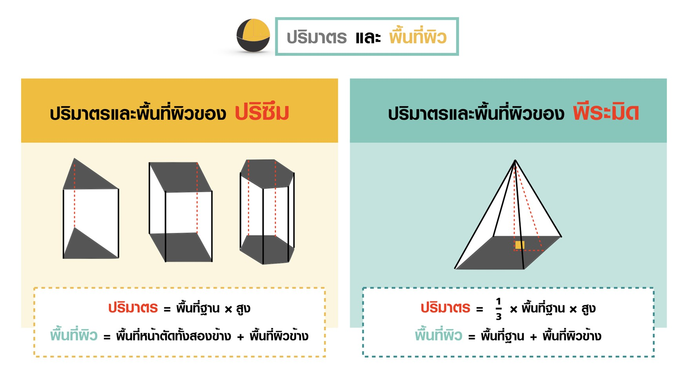
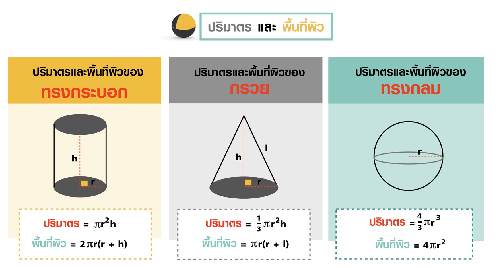
พีระมิด คือ รูปเรขาคณิต 3 มิติ ที่มีฐานเป็นรูปเหลี่ยมใด ๆ 1 ฐาน และมีด้านข้างแต่ละด้านเป็นรูปสามเหลี่ยมที่มีจุดยอดร่วมกันที่ยอดแหลม
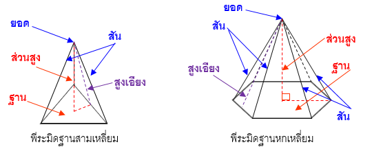
การเรียกพีระมิดจะเรียกตามลักษณะของรูปเหลี่ยมที่เป็นฐาน เช่น พีระมิดฐานสามเหลี่ยม พีระมิดฐานสี่เหลี่ยม พีระมิดฐานหกเหลี่ยม
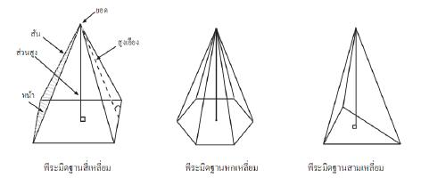
พื้นที่ผิวของพีระมิดฐานสี่หลี่ยมจัตุรัส
ตัวอย่างที่ 1
จงหาพื้นที่ผิวของพีระมิดฐานสี่เหลี่ยมจัตุรัสที่มีฐานยาวด้านละ 6 เซนติเมตร และสูงเอียงยาว 5 เซนติเมตร

ตัวอย่างที่ 2
จงหาปริมาตรของพีระมิดฐานสี่เหลี่ยมผืนผ้าที่มีฐานกว้าง 6 เซนติเมตร ยาว 8 เซนติเมตร และ สูง 10 เซนติเมตร
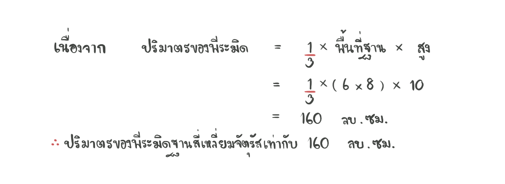
ตัวอย่างที่ 3
กำหนดให้พีระมิดฐานสี่เหลี่ยมจัตุรัสมีปริมาตร 32 ลบ.ซม. และสูง 6 ซม. จงหา
1. พื้นที่ฐานของพีระมิด
2. ความยาวด้านแต่ละด้านของฐานพีระมิด
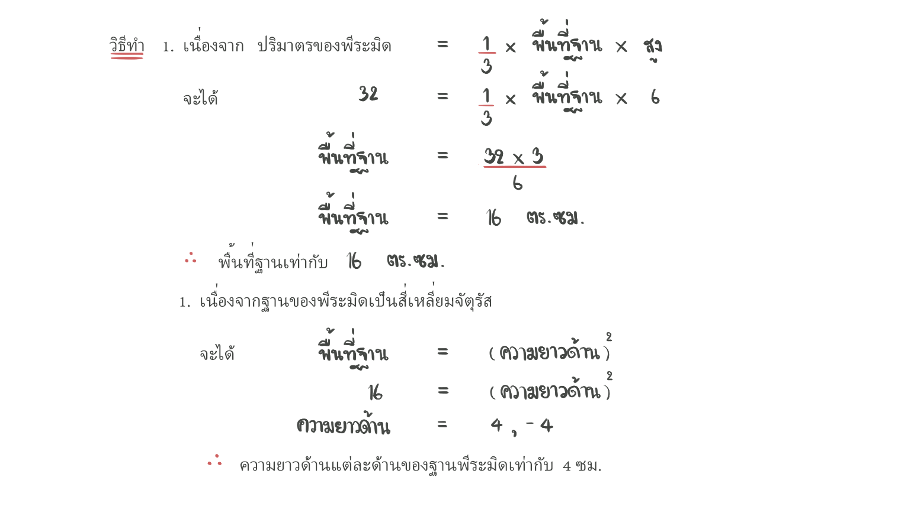
พีระมิด (pyramid) เป็นเลขาคณิต 3 มิติ ที่มีฐานเป็นรูปหลายเหลี่ยม มียอดแหลมซึ่งไม่อยู่บนระนาบเดียวกับฐาน และหน้าทุกหน้ารูปสามเหลี่ยมที่มีจุดยอดร่วมกันที่ยอดแหลม ซึ่งส่วนประกอบต่าง ๆ ของพีระมิด มีดังนี้
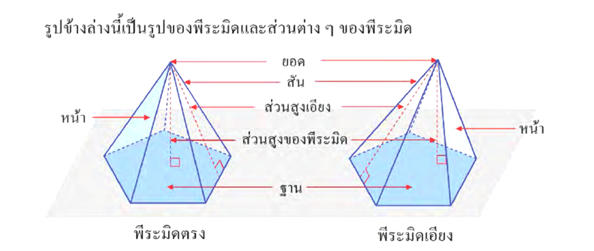
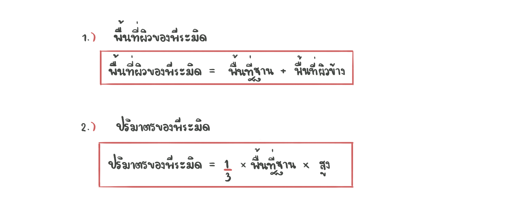
กรวย คือ รูปเรขาคณิต 3 มิติ ที่มีฐานรูปวงกลม 1 ฐาน และยอดแหลมที่ไม่อยู่บนระนาบเดียวกับฐาน โดยที่มีเส้นตรงเชื่อมระหว่างจุดยอดและเส้นรอบฐาน
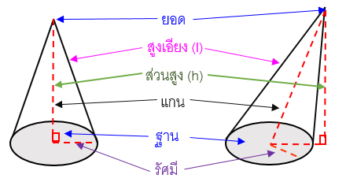
ตัวอย่างที่ 4
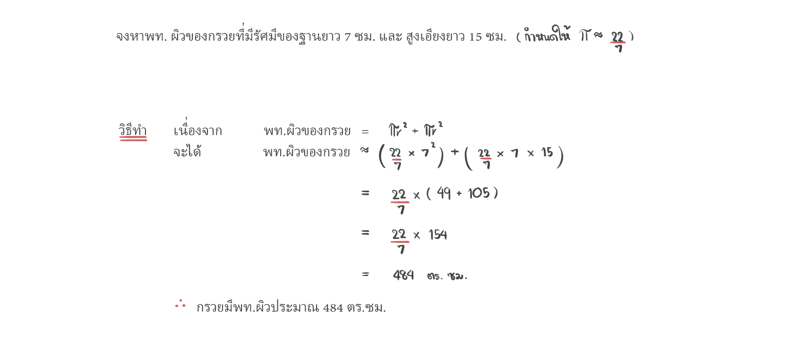
ตัวอย่างที่ 5
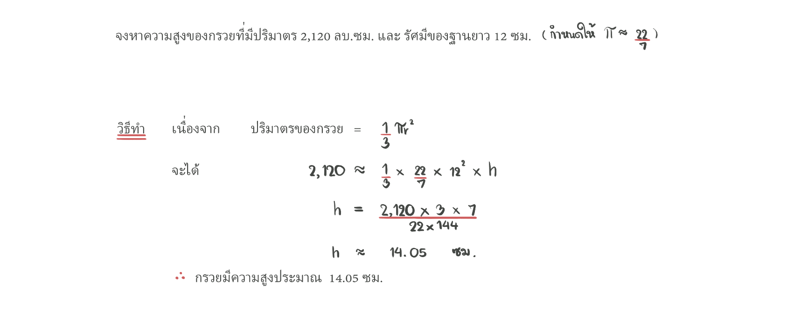
กรวย (cone) เป็นรูปเรขาคณิต 3 มิติ ที่มีฐานเป็นวงกลม มียอดแหลมที่ไม่อยู่บนระนาบเดียวกับฐาน และเส้นที่ต่อระหว่างจุดยอดกับจุดใด ๆ บนขอบของฐานเป็นส่วนของเส้นตรงซึ่งเป็นส่วนประกอบต่าง ๆ ของกรวย มีดังนี้
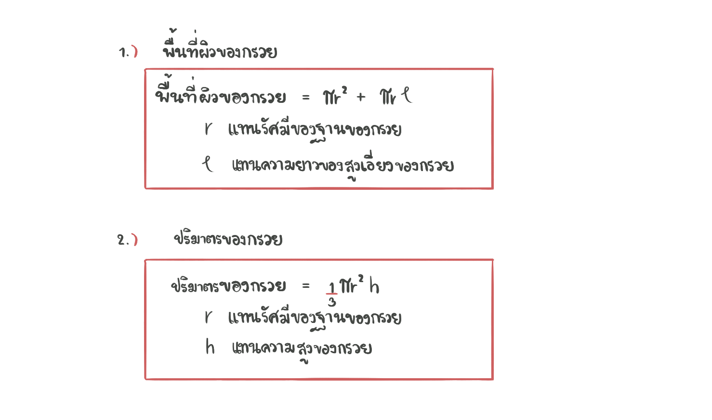
ทรงกลม คือ รูปเรขาคณิต 3 มิติ ที่มีผิวโค้งเรียบ และมีจุดทุกจุดบนผิวโค้งห่างจากจุดศุนย์กลางทรงกลมเป็นระยะทางเท่ากัน
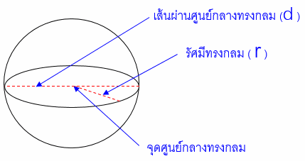
ตัวอย่างที่ 6
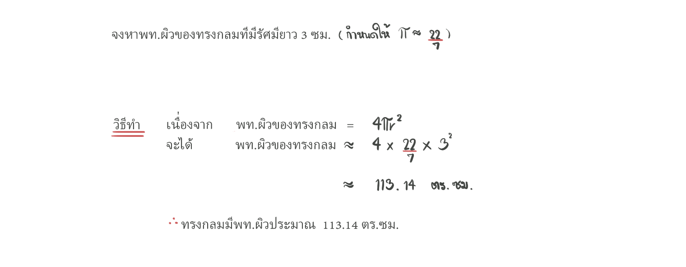
ตัวอย่างที่ 7
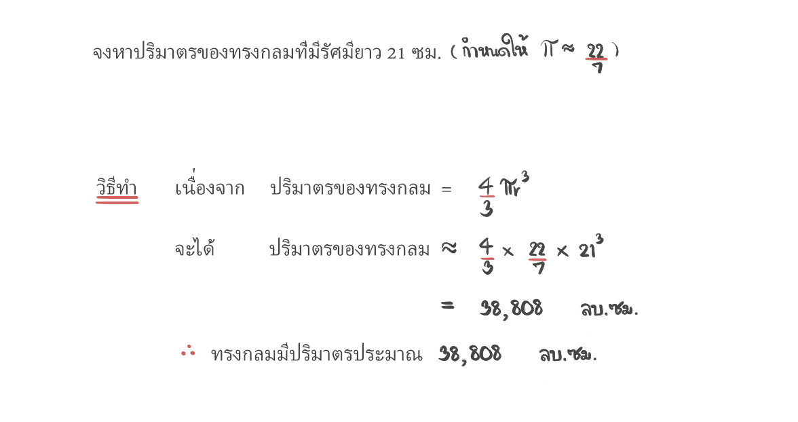
ทรงกลม (sphere) เป็นทรง 3 มิติ ที่มีผิวโค้งเรียบและจุดทุกจุดบนผิวโค้งอยู่ห่างจากจุดคงที่จุดหนึ่งเป็นระยะเท่ากัน จะเรียกจุดคงที่ว่า จุดศูนย์กลางของทรงกลม
และ เรียกระยะที่เท่ากันว่ารัศมีของทรงกลม ซึ่งส่วนประกอบต่าง ๆ ของทรงกลม มีดังนี้
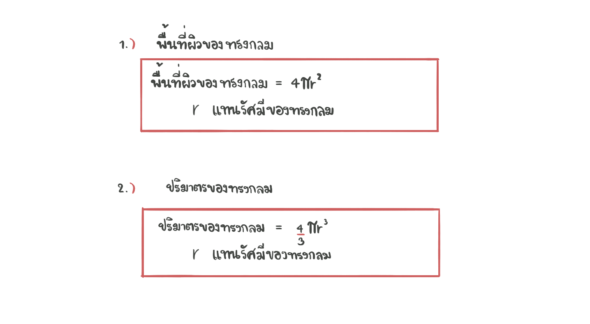